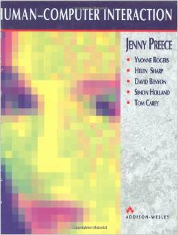
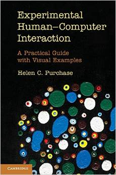
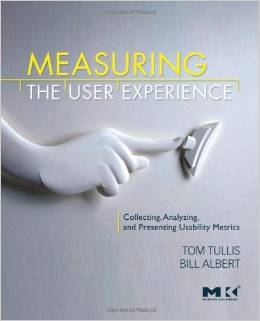
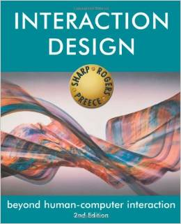

Sandi Ljubic
Associate Professor
Department of Computer Engineering
Faculty of Engineering
University of Rijeka
Contact:
Vukovarska 58, HR-51000 Rijeka, Croatia
sandi.ljubic at riteh dot uniri dot hr
UNIRI portfolio | CROSBI | Linkedin | ResearchGate | Google Scholar | ORCiD | WoS | Scopus
Department of Computer Engineering
Faculty of Engineering
University of Rijeka
Contact:
Vukovarska 58, HR-51000 Rijeka, Croatia
sandi.ljubic at riteh dot uniri dot hr
UNIRI portfolio | CROSBI | Linkedin | ResearchGate | Google Scholar | ORCiD | WoS | Scopus
My Bookshelf
Books that I own, read, like, are helpful, and that I recommend.
HCI,
Experimental HCI,
Interaction Design,
Usability and Usability Testing,
Statistics,
Android Development,
Other
HCI
|
Stuart K. Card, Thomas P. Moran, Allen Newell The Psychology of Human-Computer Interaction CRC Press (Lawrence Erlbaum Associates; New Ed edition); 1986. The bible. The classic. The source. |
|  |
J. Preece, Y. Rogers, H. Sharp, D. Benyon, S. Holland, T. Carey Human-Computer Interaction Addison Wesley; 1994. |
Experimental HCI
|
I. Scott MacKenzie Human-Computer Interaction: An Empirical Research Perspective Morgan Kaufmann; 2013. |
|  |
Helen C. Purchase Experimental Human-Computer Interaction: A Practical Guide with Visual Examples Cambridge University Press; 2012. |
|
Jonathan Lazar, Jinjuan Heidi Feng, Harry Hochheiser Research Methods in Human-Computer Interaction Wiley; 2010. |
|
Jeff Sauro, James R. Lewis Quantifying the User Experience: Practical Statistics for User Research Morgan Kaufmann; 2012. |
|  |
Thomas Tullis, William Albert Measuring the User Experience: Collecting, Analyzing, and Presenting Usability Metrics Morgan Kaufmann; 2008. |
Interface and Interaction Design
|
Donald A. Norman The Design of Everyday Things Basic Books (Reprint edition); 2002. |
|
Ben Shneiderman, Catherine Plaisant Designing the User Interface: Strategies for Effective Human-Computer Interaction (4th Edition) Information Systems Series (ISS), Butterworth-Heinemann; 2005. |
|  |
Helen Sharp, Yvonne Rogers, Jenny Preece Interaction Design: Beyond Human-Computer Interaction (2nd Edition) Wiley; 2007. |
|
Harold Thimbleby Press On: Principles of Interaction Programming The MIT Press; 2010. |
|
Matt Jones, Gary Marsden Mobile Interaction Design Wiley; 2006. |
|
Daniel Wigdor, Dennis Wixon Brave NUI World: Designing Natural User Interfaces for Touch and Gesture Morgan Kaufmann; 2011. |
|
Alan Cooper, Robert Reimann About Face 2.0: The Essentials of Interaction Design (2nd Edition) Wiley; 2003. |
Usability & Usability Testing
|
William Albert, Thomas Tullis, Donna Tedesco Beyond the Usability Lab: Conducting Large-scale Online User Experience Studies Morgan Kaufmann; 2010. |
|
Jeffrey Rubin, Dana Chisnell, Jared Spool (Foreword) Handbook of Usability Testing: How to Plan, Design, and Conduct Effective Tests Wiley; 2008. |
|
Jakob Nielsen Usability Engineering Morgan Kaufmann; 1993. |
Statistics
|
David C. Howell Fundamental Statistics for the Behavioral Sciences (3rd Edition) Wadsworth; 1994. |
|
Ellen R. Girden ANOVA: Repeated Measures (Quantitative Applications in the Social Sciences) Quantitative Applications in the Social Sciences; SAGE Publications, Inc; 1994. |
Android Development
|
Greg Nudelman Android Design Patterns: Interaction Design Solutions for Developers Wiley; 2013. |
|
Erik Hellman Android Programming: Pushing the Limits Wiley; 2013. |
Other
|
I. Scott MacKenzie, Kumiko Tanaka-Ishii Text Entry Systems: Mobility, Accessibility, Universality Morgan Kaufmann; 2010. |
Design: MiniFolio free template